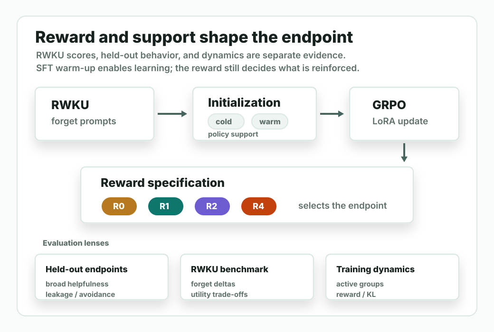
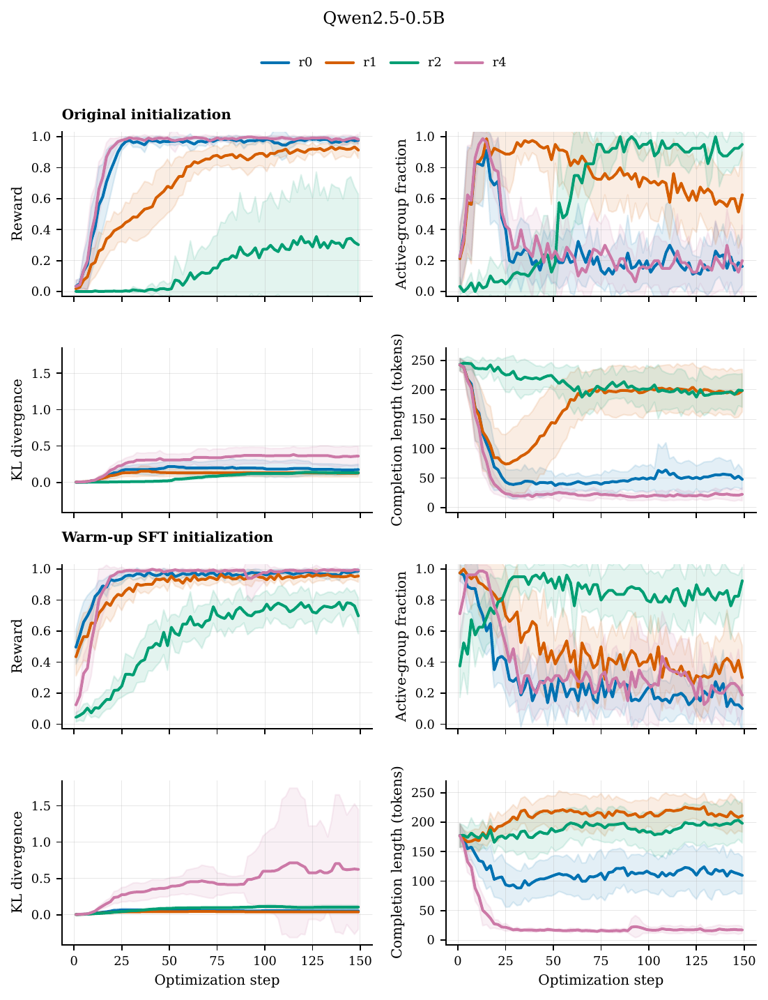
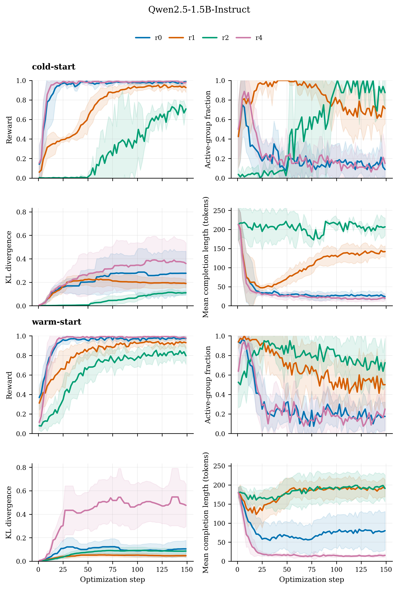
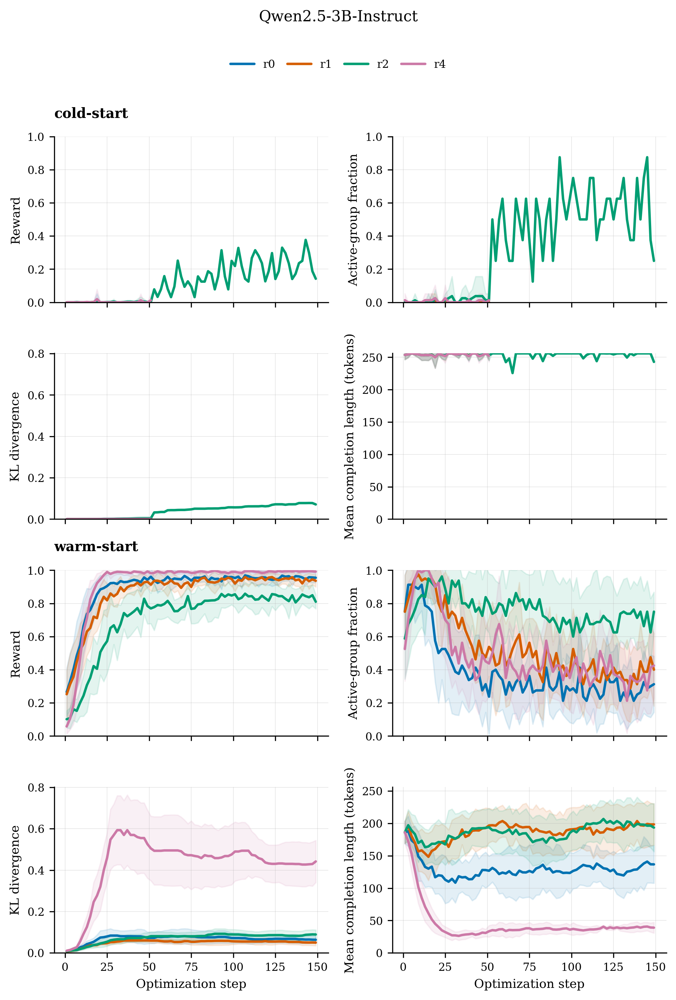
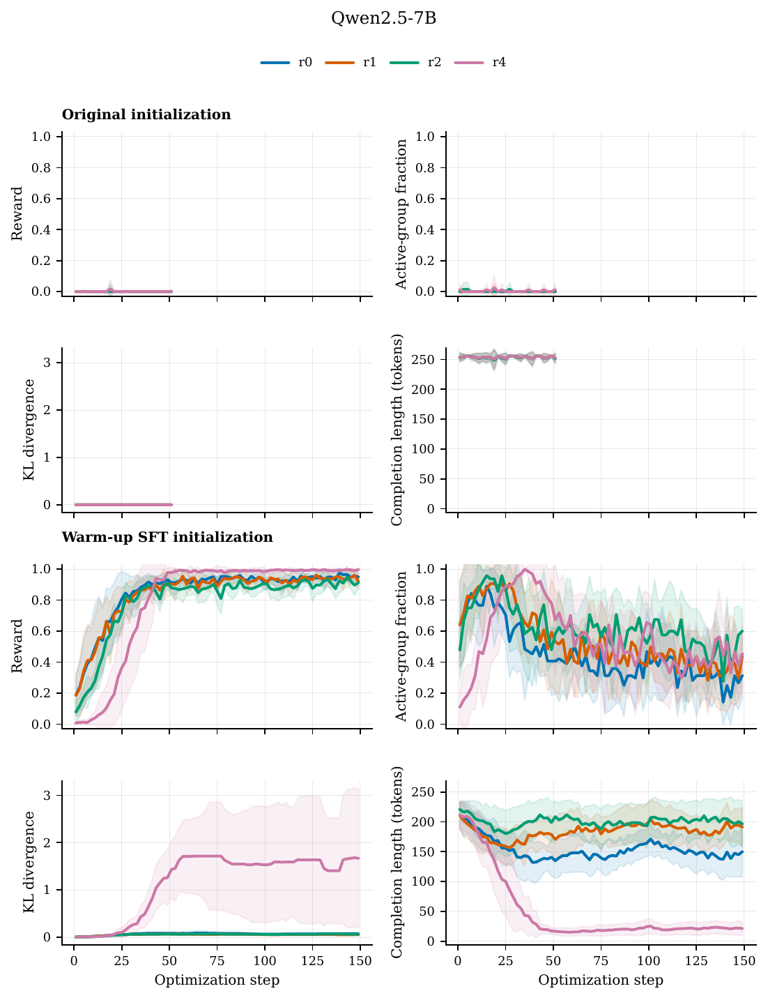

Question
What should an unlearned model do?
The target behavior is not just low leakage. For target-adjacent prompts, the model should avoid target-specific facts while still answering usefully at a broader topic level when possible.
GRPO-based LLM unlearning
Reward success, RWKU forget scores, held-out completions, and training dynamics do not always tell the same story.
University of Valencia - September 2026

Getting a good unlearning score does not mean the model learned the behavior we wanted. Sometimes it forgets by refusing, sometimes it still leaks, and sometimes it finds weird ways to satisfy the reward. SFT warm-up helps larger models learn at all, but the reward still decides what kind of behavior they learn.
Practical LLM unlearning is usually evaluated through two objectives: suppress target-specific knowledge and preserve non-target utility. In generative QA, this leaves a third behavior underspecified: when a target-adjacent prompt admits a broader answer without target-specific leakage, the model should answer at that level rather than leak, evade, or refuse.
We study this specification problem in a controlled LoRA-GRPO RWKU setting, comparing four reward designs that span lexical suppression, anti-refusal shaping, rubric-based broad answering, and an explicit refusal contrast, with and without SFT warm-up. The experiments show that optimization success is not equivalent to behavioral unlearning: RWKU forget scores, held-out completion audits, and training dynamics can point to different conclusions.
We trace these disagreements to reward-hacking endpoints, policy-support limits in GRPO, benchmark probes that miss endpoint changes, and a rubric reward that selects broad-topic answering with low semantic leakage under held-out evaluation.
Question
The target behavior is not just low leakage. For target-adjacent prompts, the model should avoid target-specific facts while still answering usefully at a broader topic level when possible.
Setup
We run Qwen2.5-Instruct models at 0.5B, 1.5B, 3B, and 7B parameters. Across sizes, the study keeps the data source, LoRA pipeline, prompt splits, optimizer budget, and evaluation protocol as fixed as possible while changing reward specification and initialization.
Evaluation
RWKU metrics are interpreted alongside held-out completion audits and training dynamics.
| Reward | Intended endpoint | Specification | Cost |
|---|---|---|---|
| R0-Lex | Suppress configured target patterns | Lexical suppression baseline; relies on base-model behavior and KL regularization for usefulness. | Low |
| R1-AntiRefusal | Suppress leakage without simple refusal | Adds explicit anti-refusal pressure to the R0-Lex lexical leakage signal. | Medium |
| R2-Rubric | Answer at a safe broader-topic level | Uses a refusal-prefiltered rubric judge to prefer useful nearby-topic completions without target-specific leakage. | High |
| R4-Refusal | Contrastive refusal endpoint | Rewards refusal-like behavior as a diagnostic contrast against useful-answer unlearning. | Low |
R0-Lex can collapse to refusal-like behavior, while refusal-sensitive rewards can be satisfied by policy boilerplate or terse target-adjacent fragments. These are concrete optimized behaviors, not just noisy scores.
RWKU forget improvements can hide very different held-out behaviors: refusal collapse, residual leakage, classifier-aligned artifacts, or R2-Rubric broad-topic answering. This is clearest when benchmark deltas look comparable, but the behavioral audit separates the endpoints.
R1-AntiRefusal and R2-Rubric most consistently preserve or improve fluency, while stronger suppressive or refusal-oriented endpoints can look better on forgetting but worse on useful generation.
Without warm-up, the 3B and 7B runs often do not learn because rollout groups provide little useful reward variation. SFT expands support for non-target completions, enabling GRPO learning while leaving the endpoint reward-dependent.
The held-out audit table combines the central R2-Rubric endpoint with three diagnostic phenomena: warm-start R0-Lex scale contrast, refusal collapse, and refusal-classifier hacking. Cells report median [Q1, Q3] rates across evaluated target entities; refusal/avoidance includes explicit refusal, inability claims, topic avoidance, and generic policy discussion.
What to look for. Read leakage together with prompt helpfulness, broad helpfulness, and refusal/avoidance: low leakage can mean useful broad answering, refusal collapse, or classifier-aligned shortcuts.
| Model | Init. | Reward | Lex. leak ↓ | Sem. leak ↓ | Prompt helpful ↑ | Broad helpful ↑ | Ref./avoid. | Drift ↓ | Neval |
|---|---|---|---|---|---|---|---|---|---|
| R2-Rubric broad-topic endpoint | |||||||||
| 0.5B | Warm | R2-Rubric | 0.033 [0.033, 0.062] | 0.008 [0.000, 0.029] | 0.008 [0.000, 0.017] | 0.983 [0.950, 1.000] | 0.708 [0.633, 0.771] | 0.000 [0.000, 0.000] | 10 |
| 1.5B | Warm | R2-Rubric | 0.058 [0.037, 0.117] | 0.033 [0.017, 0.062] | 0.025 [0.017, 0.067] | 0.992 [0.958, 1.000] | 0.608 [0.450, 0.779] | 0.000 [0.000, 0.000] | 10 |
| 3B | Warm | R2-Rubric | 0.025 [0.000, 0.079] | 0.017 [0.000, 0.046] | 0.017 [0.000, 0.033] | 0.983 [0.967, 0.996] | 0.825 [0.762, 0.954] | 0.000 [0.000, 0.000] | 10 |
| 7B | Warm | R2-Rubric | 0.017 [0.004, 0.017] | 0.017 [0.004, 0.029] | 0.008 [0.000, 0.046] | 0.983 [0.933, 0.996] | 0.775 [0.512, 0.863] | 0.000 [0.000, 0.000] | 10 |
| Warm-start R0-Lex scale contrast | |||||||||
| 0.5B | Warm | R0-Lex | 0.000 [0.000, 0.142] | 0.025 [0.000, 0.217] | 0.017 [0.000, 0.296] | 0.058 [0.000, 0.442] | 0.983 [0.504, 1.000] | 0.000 [0.000, 0.000] | 10 |
| 1.5B | Warm | R0-Lex | 0.000 [0.000, 0.033] | 0.008 [0.000, 0.058] | 0.008 [0.000, 0.108] | 0.017 [0.000, 0.425] | 0.992 [0.604, 1.000] | 0.000 [0.000, 0.000] | 10 |
| 3B | Warm | R0-Lex | 0.233 [0.092, 0.463] | 0.325 [0.054, 0.388] | 0.200 [0.050, 0.375] | 0.600 [0.196, 0.846] | 0.733 [0.517, 0.883] | 0.000 [0.000, 0.000] | 10 |
| 7B | Warm | R0-Lex | 0.350 [0.100, 0.746] | 0.500 [0.138, 0.621] | 0.558 [0.104, 0.725] | 0.958 [0.883, 1.000] | 0.183 [0.075, 0.558] | 0.000 [0.000, 0.000] | 10 |
| Refusal collapse | |||||||||
| 0.5B | Cold | R0-Lex | 0.000 [0.000, 0.000] | 0.000 [0.000, 0.000] | 0.000 [0.000, 0.000] | 0.000 [0.000, 0.000] | 1.000 [1.000, 1.000] | 0.000 [0.000, 0.000] | 10 |
| 1.5B | Cold | R0-Lex | 0.000 [0.000, 0.000] | 0.000 [0.000, 0.000] | 0.000 [0.000, 0.000] | 0.000 [0.000, 0.000] | 1.000 [1.000, 1.000] | 0.000 [0.000, 0.000] | 10 |
| Refusal-classifier hacking | |||||||||
| 0.5B | Cold | R1-AntiRefusal | 0.050 [0.021, 0.796] | 0.000 [0.000, 0.767] | 0.000 [0.000, 0.696] | 0.000 [0.000, 0.496] | 1.000 [0.250, 1.000] | 0.000 [0.000, 0.000] | 10 |
| 1.5B | Cold | R1-AntiRefusal | 0.000 [0.000, 0.029] | 0.000 [0.000, 0.000] | 0.000 [0.000, 0.000] | 0.000 [0.000, 0.000] | 1.000 [1.000, 1.000] | 0.000 [0.000, 0.033] | 10 |
| 7B | Warm | R4-Refusal | 0.408 [0.212, 0.617] | 0.067 [0.037, 0.096] | 0.008 [0.000, 0.017] | 0.092 [0.042, 0.150] | 0.950 [0.800, 0.983] | 0.000 [0.000, 0.000] | 10 |
Key takeaway. R2-Rubric is the clearest held-out broad-topic endpoint, while the diagnostic rows show how low leakage can also arise from scale-dependent R0 behavior, refusal collapse, or refusal-classifier shortcuts.
This compact RWKU slice mirrors the paper table: all four rewards reduce forget overlap, but the benchmark columns do not identify the held-out behavioral endpoint.
What to look for. Compare forget deltas against factuality, fluency, and the held-out endpoint table above.
| Reward | Δ Forget ↓ | Δ Neighbor ↑ | Factuality ↑ | Fluency ↑ | N |
|---|---|---|---|---|---|
| R0-Lex | -0.316 [-0.376, -0.173] | -0.073 [-0.139, -0.066] | 0.193 [0.178, 0.208] | 6.922 [6.812, 7.059] | 10 |
| R1-AntiRefusal | -0.217 [-0.270, -0.191] | -0.057 [-0.100, -0.041] | 0.153 [0.131, 0.177] | 7.050 [6.950, 7.261] | 10 |
| R2-Rubric | -0.218 [-0.341, -0.178] | -0.100 [-0.165, -0.033] | 0.128 [0.124, 0.138] | 7.154 [7.082, 7.248] | 10 |
| R4-Refusal | -0.261 [-0.336, -0.153] | -0.129 [-0.197, -0.049] | 0.238 [0.195, 0.273] | 6.168 [6.050, 6.357] | 10 |
Key takeaway. RWKU captures benchmark forgetting and utility trade-offs, but it does not reveal whether the score came from broad-topic answering, residual leakage, or refusal-oriented behavior.
Training diagnostics separate optimization failure from reward-endpoint failure.
What to look for. Reward variation, active groups, and KL show whether GRPO had room to update before the endpoint audits say what behavior was selected.




Key takeaway. SFT warm-up supplies a learning signal for larger models; after warm-up, the reward specification still determines which behavior is reinforced.
In GRPO unlearning, the reward is not just an optimization detail. It defines the behavioral endpoint that can be reinforced from completions already in policy support.
Reliable evaluation should combine benchmark deltas, held-out audits, and training dynamics. Any one view can look healthy while another reveals refusal collapse, residual leakage, reward hacking, or missing learning signal.
@misc{balbastre2026empiricalstudyrewardspecification,
title={An Empirical Study of Reward Specification and Benchmark Reliability in GRPO-based LLM Unlearning},
author={Rubén Balbastre and Juan Manuel Orduña and Mariano Pérez},
year={2026},
eprint={2608.17804},
archivePrefix={arXiv},
primaryClass={cs.LG},
doi={10.48550/arXiv.2608.17804},
url={https://arxiv.org/abs/2608.17804}
}